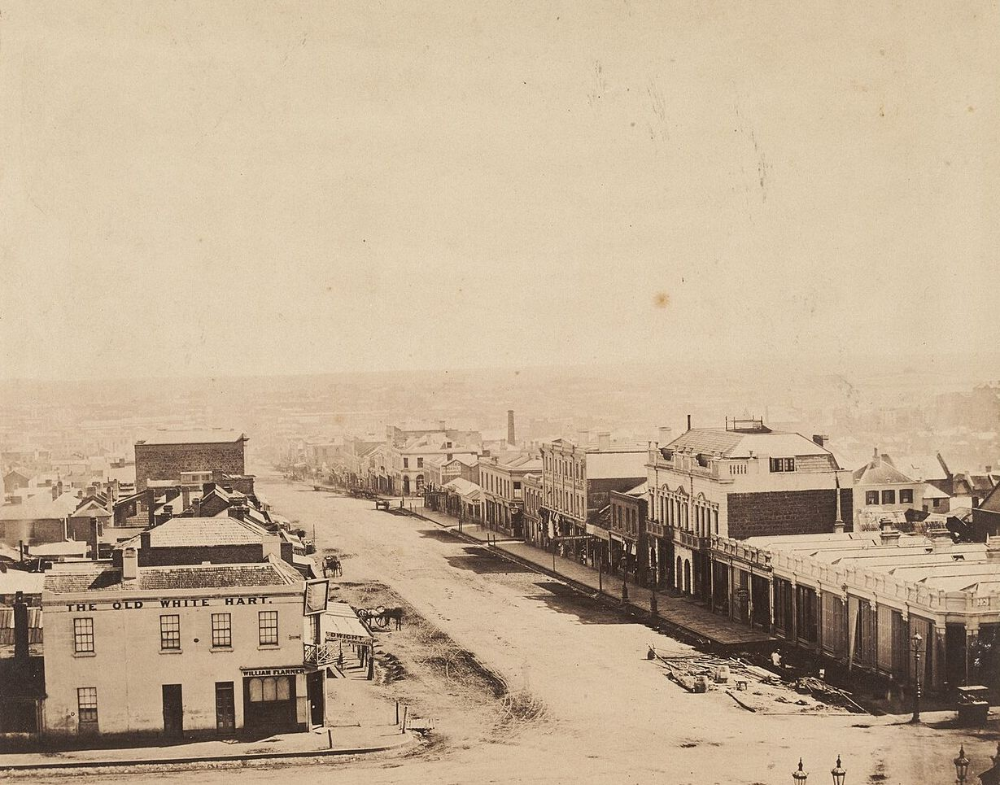
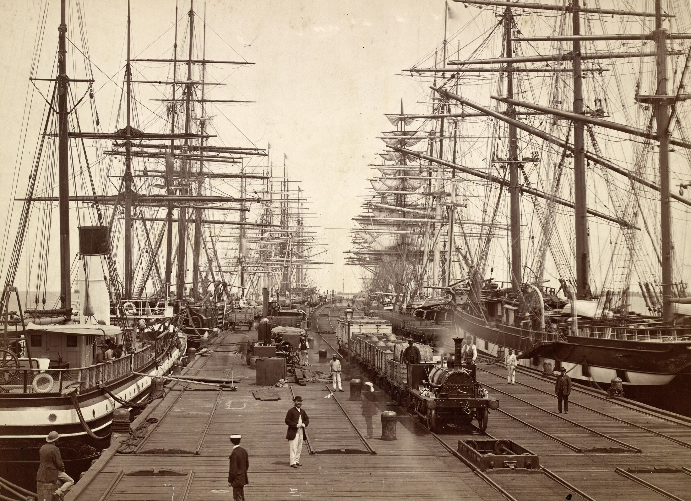
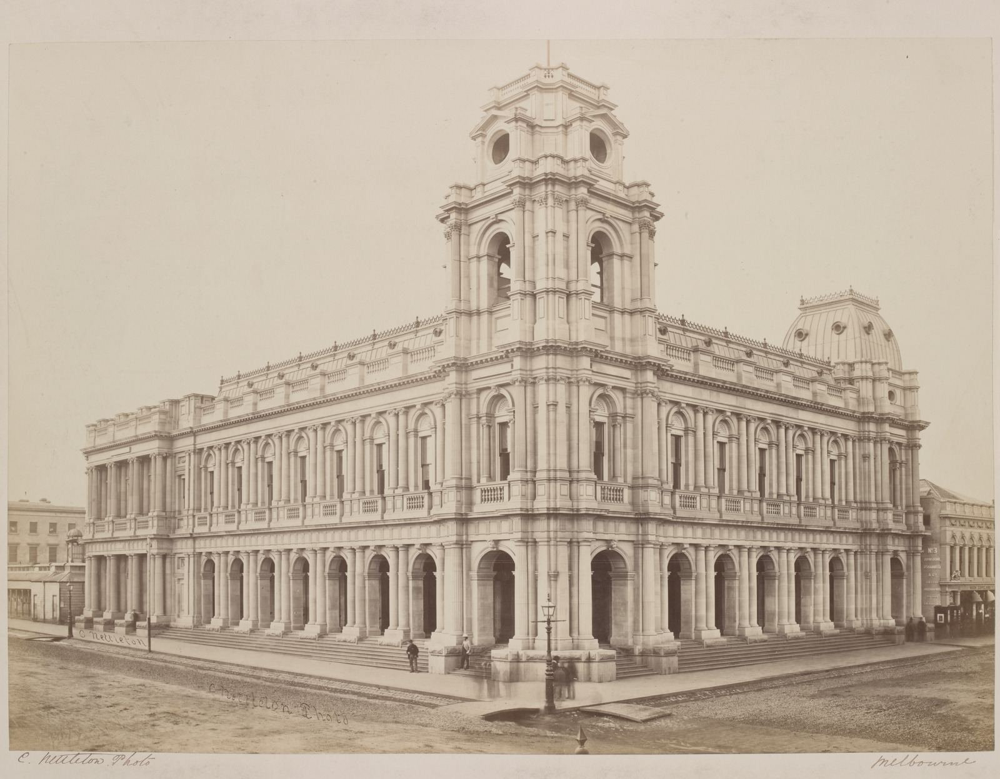
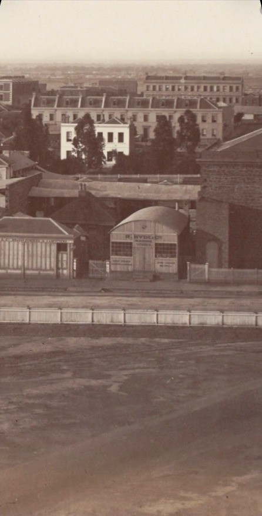
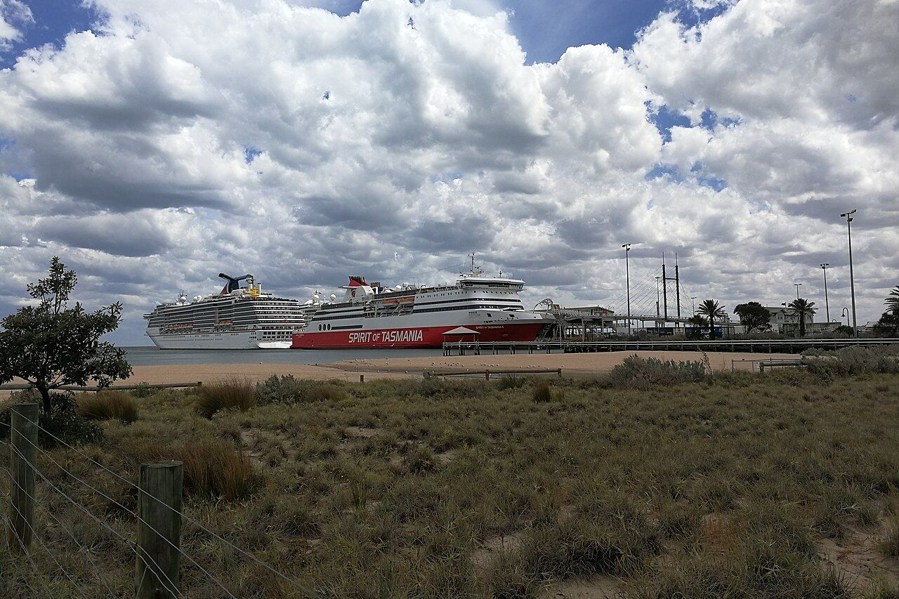
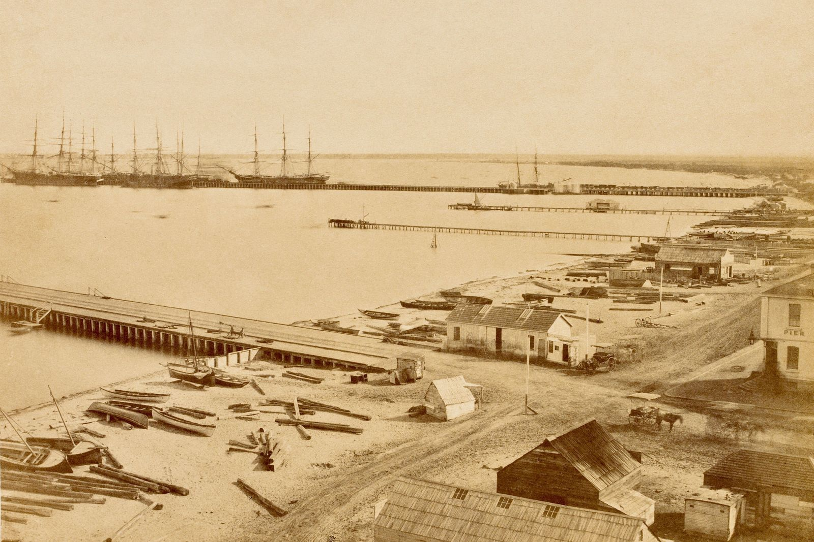

The time machine
Seven stops in the life of a Melbourne marine store, and an eighth for why we took up its name. Scroll, or jump to a year. Each stop links to the source we used.
Bourke Street looking west from Spring Street, about 1858. Antoine Fauchery. State Library Victoria, public domain.
The token
Robert Hyde & Co. issues copper trade tokens, probably struck by Heaton & Sons of Birmingham.
Melbourne was short of small change, and traders issued their own pennies and halfpennies. Each one doubled as an advertisement.
Museums Victoria, NU 11310 and related
ROBERT HYDE & Co · MELBOURNE
GENERAL MARINE STORE
SHIPPERS OF RAGS GLASS METALS &c.
- Material
- Copper
- Size
- 28 mm halfpenny, 34 mm penny
- Reverse
- Peace & Plenty, Advance Australia
Source: Robert Hyde & Co. halfpenny token, 1857. Museums Victoria
A second issue
A second run of tokens is struck. Hyde’s Marine Store advertises in The Argus from Albert Street, East Melbourne.
Source: Robert Hyde & Co. halfpenny token, 1861. Museums Victoria; Hyde's Marine Store advertisement. The Argus, 12 March 1861 (Trove)
In the directory
Hyde’s Marine Store appears in a Melbourne directory for the first time, at 11 Albert Street, East Melbourne.
Melbourne Directory · 1862
Hyde, Robert, & Co.marine store, 11 Albert st. E.
Our recreation of the listing as recorded by Museums Victoria, not a scan of the page.
Source: Robert Hyde & Co., Merchants, Melbourne. Museums Victoria
Shipping to England
The Age describes Hyde’s as Melbourne’s principal rag exporter, sending about 500 tons of rags a year to England, along with zinc and broken glass.
From 1863 to 1865, Hyde trades in partnership with Richard Hodgson as Hyde, Hodgson & Co.

Source: Report on Melbourne's rag export trade. The Age, 19 January 1863 (Trove); Robert Hyde & Co., Merchants, Melbourne. Museums Victoria
Rags, then metal again
The business is listed as a rag merchant in 1868, then as a marine store again in 1869 and 1870.

Source: Robert Hyde & Co., Merchants, Melbourne. Museums Victoria; Hyde's Rag Store auction notice, 1869 (Trove)
The last trace
The last record found of the business is R. Hyde, Little Bourke Street.

Probate
Probate is granted for a Robert Hyde of Richmond, marine store dealer, very likely the same man. No successor business has been found.
Public Record Office Victoria
Probate and administration files
VPRS 28 · 17/144
Robert Hyde, Richmond, marine store dealer
The file is listed in the PROV catalogue; we haven’t viewed it yet.
Source: Probate file for Robert Hyde, VPRS 28, 17/144. Public Record Office Victoria
The name, revived
Robert Hyde & Co. is a new business carrying an old name. We aren’t the original firm and we don’t claim its years.
The firm is gone. The trade isn’t.
What we share is the trade: buying old metal and sending it back into use. We took up the name because it had fallen out of use, and because its story is a reminder that recycling in Melbourne is older than the word.

Hyde’s Melbourne
Every address the record gives for the business, pinned on an Admiralty chart of 1864. Zoom, drag, or choose a place from the list.

Pins are placed by us and are approximate. Hobson Bay and River Yarra, Admiralty chart by Henry L. Cox, published 1865. State Library Victoria, public domain.
The pier, then and now
Sandridge about 1858, where ships for England tied up, and the same shore at Port Melbourne today. Drag to compare.



What was a marine store?
In colonial Melbourne, a marine store dealer bought and sold second-hand goods and scrap: old rope and ships’ stores, bottles, rags, bones and metal.
Nobody can claim to be Victoria’s first. Unnamed marine stores appear in Melbourne papers from 1841, and a named dealer, Blackmore of Bourke Street, by 1848. Hyde’s is one of the early marine stores that left a documented trail: tokens, advertisements, directory listings and a newspaper report on its trade.
Sources
- Robert Hyde & Co. halfpenny token, 1857. Museums Victoria
- Robert Hyde & Co. halfpenny token, 1861. Museums Victoria
- Robert Hyde & Co., Merchants, Melbourne. Museums Victoria
- Hyde's Marine Store advertisement. The Argus, 12 March 1861 (Trove)
- Report on Melbourne's rag export trade. The Age, 19 January 1863 (Trove)
- Hyde's Rag Store auction notice, 1869 (Trove)
- R. Hyde, Little Bourke Street, 1872 (Trove)
- Probate file for Robert Hyde, VPRS 28, 17/144. Public Record Office Victoria
- Blackmore, marine store dealer, Bourke Street, 1848 (Trove)
- Historic photographs and chart: State Library Victoria collection, public domain, via Wikimedia Commons.